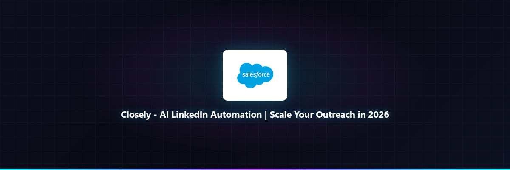

While others waste hours on manual prospecting, top performers use Closely as their hidden weapon to automate intelligent LinkedIn outreach. Zero grunt work. Pure pipeline.
⏰ Limited-time pricing · No credit card required

// Rejecting the manual grind with AI that actually understands context
AI agents scour LinkedIn for ICP matches and analyze intent signals in real-time. They initiate conversations 24/7 without manual searching or copy-paste sequences.
Job changes, content engagement, and tech stack shifts trigger hyper-relevant outreach exactly when prospects are most receptive. No more blind spraying.
Multi-turn dialogues adapt to responses using context-aware replies that book meetings instead of just collecting empty replies from tired templates.
Full visibility into AI-sourced deals. Track meetings booked, SQLs generated, and revenue influenced down to the dollar with CRM-lite organization.
This is NOT for everyone. If you are tired of spending 15-20 hours weekly on manual LinkedIn outreach that yields 50 prospects and ghosting, if you need to scale without hiring more SDRs, if you are competing against teams already using AI automation — then keep reading.
Specifically built for:
If none of that sounds like you, close this tab. But if it does — your secret weapon is here.
"Closely is a time-saving tool for LinkedIn first contact that eliminates the need for back-and-forth messages. The interface is clean, and getting campaigns live takes minutes instead of hours."
— Verified user review | Trustpilot
400+ teams onboarded since January 2026 using Closely for automated LinkedIn outreach